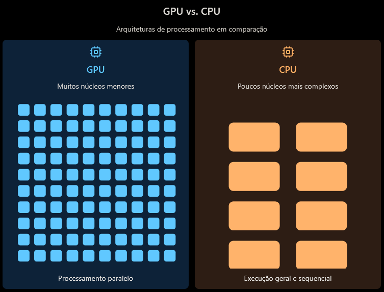
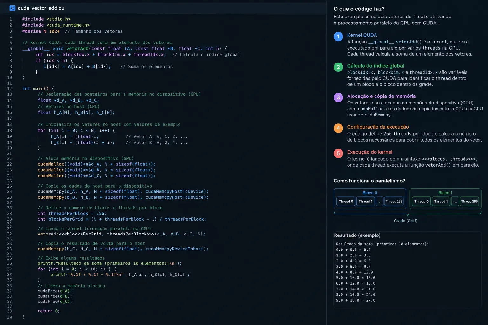
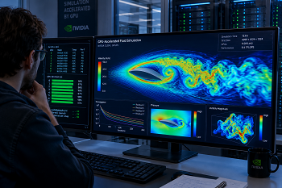
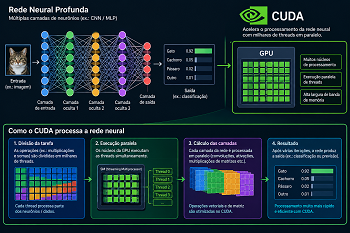

GPGPU e Computação CUDA
O que é GPGPU?
GPGPU significa General-Purpose Computing on Graphics Processing Units (Computação de Propósito Geral em Unidades de Processamento Gráfico). Tradicionalmente, as GPUs eram projetadas exclusivamente para renderizar gráficos. Com a GPGPU, os desenvolvedores podem utilizar o imenso poder de processamento paralelo das placas de vídeo para resolver problemas complexos de computação, como simulações físicas, inteligência artificial e processamento de dados científicos.

Arquitetura CUDA
CUDA (Compute Unified Device Architecture) é uma plataforma de computação paralela e um modelo de programação criado pela NVIDIA. Ela permite que os desenvolvedores de software utilizem uma GPU habilitada para CUDA para processamento de propósito geral. O CUDA fornece acesso direto ao conjunto de instruções virtuais da GPU e aos elementos de computação paralela.

A grande vantagem do CUDA é que ele suporta linguagens de programação populares como C, C++ e Fortran, facilitando a vida dos desenvolvedores que não precisam aprender linguagens gráficas específicas, como OpenGL ou DirectX, para realizar cálculos matemáticos pesados.
Galeria de Aplicações e Hardware


Referências
- NVIDIA. CUDA Zone. Disponível em: https://developer.nvidia.com/cuda-zone.
- WIKIPEDIA. General-purpose computing on graphics processing units. Disponível em: https://en.wikipedia.org/wiki/General-purpose_computing_on_graphics_processing_units.